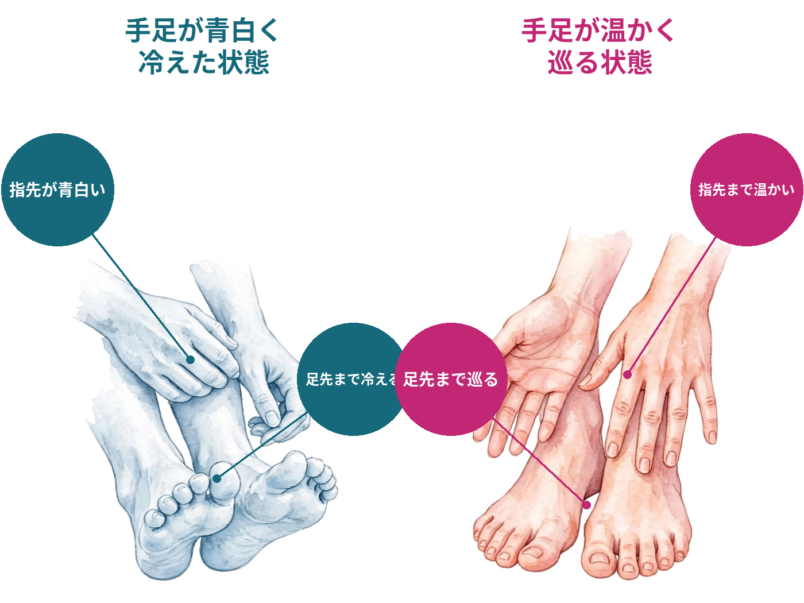

手足の冷え・冷えのぼせ
美容整体ステラ・ポラリス東三国｜大阪市淀川区東三国・東三国駅徒歩5分・女性向け

末端まで巡りを届けて、手足の温かさを取り戻す
手足はいつも冷たいのに、顔はほてる。靴下を重ねても足先が冷える——手足の冷えと「冷えのぼせ」は、巡りのアンバランスのサインと言われています。体の中心と末端で巡りに差が出ると、このような状態が起こりやすくなります。このページでは、手足の冷えと冷えのぼせの仕組み、末端まで巡りを届けることを目指す当サロンでのケア、ご自宅でできるセルフケアをご案内します。冷えは、体質だから仕方ないと諦められがちですが、巡りの土台を整えることで、温かさを感じやすい体に近づくことはできます。冷えの感じ方には個人差があり、自分のパターンを知ることが大切です。
ご予約はこちら（Coubic）こんなお悩みありませんか
- 手足の先が、いつも冷たく感じる
- 顔はほてるのに、手足は冷たいことがある
- 靴下を重ね履きしても、足先が温まらない
- お風呂上がりでも、すぐに足が冷たくなる
- 夕方になると、脚がむくんで重くなる
- 冷えると、肩や腰まで固まる感じがする
- 温かい飲み物を手に持つのが、ほっとする
当てはまる項目が多いほど、体の中心と末端の巡りのアンバランスが積み重なっている目安とされています。冷えは末端だけの問題ではなく、全身の巡りの問題です。次のセルフチェックで、手足の温かさの傾向を確かめてみましょう。手足の温かさは、体調を知る手がかりにもなります。いつもと違う冷え方をするときは、無理をしない目安にしてください。
簡単セルフチェック（手足の温かさチェック）
両手で足先を触って、温かさを確かめる簡単な方法です。
- 椅子に座り、片足を反対の膝に乗せます。
- 手で足の指と足裏を包み、温かさを確認します。
- 手の温かさに比べて足が明らかに冷たい、左右で差が大きい場合は、末端まで巡りが届きにくい目安と言われています。
※これは診断ではありません。ご自身の状態の傾向を知る目安としてお使いください。
手足の冷え・冷えのぼせの原因と仕組み
巡りの末端である手足
手足は心臓から一番遠い場所で、巡りの状態が最も現れやすい部位です。体の中心を守るために末端の巡りが抑えられると、手足は冷たくなります。図1のように、巡りが届いた手足と冷えた手足では、色も温かさも大きく変わります。冷えは、全身の巡りの映し鏡です。

図1 末端の巡りと温かさの関係、手足が温かく巡る状態のイメージ。体の状態には個人差があります。
冷えのぼせが起こる理由
体の中心に熱がこもり、末端まで巡りが届かないと、顔はほてるのに手足は冷たいという状態が起こります。上半身と下半身、中心と末端のアンバランスが、その正体と言われています。全身の巡りを整える視点が、冷えのぼせのケアには欠かせません。ほてりを感じると冷たい飲み物を選びたくなりますが、それが末端の冷えを強めることもあります。冷えのぼせのときほど、体の中は温かく保つ工夫が役立ちます。
筋肉の緊張と巡り
肩や腰、脚の筋肉が緊張していると、その内側を通る巡りは滞りやすくなります。とくに脚の筋肉は、末端へ巡りを送るポンプの役割も担います。全身をゆるめて筋肉のポンプを働かせることが、温かさを取り戻す土台です。とくにふくらはぎは「第二の心臓」とも呼ばれ、末端の巡りを助ける大切な部位です。ここの張りをゆるめることは、足先の温かさにも関わります。
姿勢と生活習慣の影響
姿勢が丸まって胸が閉じていると、巡りの起点も働きにくくなります。運動不足や冷たい飲食、薄着の習慣も、冷えを後押しします。ケアと習慣の両方から向き合うことが、冷え体質との付き合い方です。
セルフケアで足りる場合・サロンケアが向く場合
冷えが軽く、温めたり体を動かしたりすると手足が温まる日が多い場合は、まずご自宅でのセルフケアを続けて様子を見る方法があります。一方で、何をしても足先が温まらない、冷えとほてりの両方が気になる、全身の緊張も強いという場合は、サロンでのケアが向いている目安になります。サロンでは、全身をゆるめて巡りを助け、施術後に「手足が温かい」「体が軽い」と感じやすい状態を目指します。どちらが正解というものではなく、今の状態に合わせて選ぶことが大切です。施術では、温かさを感じやすい部位から順に進め、体全体がゆるむ流れを大切にしています。
当サロンでのケア
当サロンの冷えケアは、「全身の緊張をゆるめ、末端まで巡りを届ける」ことを目指す組み立てです。まず姿勢と体の力み具合、手足の温かさを一緒に確認し、部位と目的に合わせて3つの手技を組み合わせます。
美容整体：背骨のラインと姿勢の軸を整え、胸が開いて巡りの起点が働きやすい土台をつくることを目的に。
アロマオイルマッサージ：脚全体から背中、手足の先までオイルでゆるめ、巡りが流れやすい状態を目指します。温かみのある香りでリラックス感も大切にしています。
もみほぐし：固まった肩や腰、ふくらはぎをほぐし、巡りのポンプが働きやすい状態を目指して進めます。
ケアを通して目指すのは、こんな変化です。
- 手足の先まで、温かさが巡るような感覚へ
- 顔のほてりと手足の冷えの差が、やわらぐ印象へ
- 脚のむくみが流れやすく、夕方の重さが軽い状態へ
- 全身がゆるんで、体が軽く感じる状態へ
- 温める習慣のコツを知り、日常でも巡りを保ちやすい状態へ
施術の仕上げには、足湯の取り入れ方や、冷えやすい日の温め方のポイントもお伝えします。冷えとの付き合いは、日々の小さな習慣の積み重ねです。温かさを感じる時間を持つことが、その第一歩になります。冷えとの付き合いは長い目で見るものです。温かく感じる時間が増えることを目安に、焦らず続けましょう。

施術の流れ
ご来店後、気になる部位やお悩み、ご希望の強さなどをうかがいます。完全個室のため、周りを気にせずお話しいただけます。
姿勢の軸や体の力み具合、手足の温かさなどを一緒に確認し、その日の状態に合わせた施術の進め方をご案内します。
美容整体を中心に、ご希望に応じてアロマオイルマッサージ、もみほぐしを組み合わせて進めます。強さは途中でも調整できます。
施術後の状態を確認し、ご自宅で続けやすいセルフケアのポイントをお伝えします。次回の目安についても、ご希望があればご案内します。
料金
| コース | 通常価格 | キャンペーン価格（12/25まで） |
|---|---|---|
| 80分 | 8,000円 | 3,000円 |
| 100分 | 10,000円 | 4,000円 |
| 120分 | 12,000円 | 5,000円 |
クリスマスキャンペーンは12月25日まで、ご新規様もリピーターの方も対象です。施術内容は当日の状態とご希望に合わせて組み立てます。
ご自宅でできるセルフケア
- 足湯：くるぶしまで浸かる足湯を10分。寝る前に行うと、手足の温かさを保ちやすくなります。
- ふくらはぎのポンプ体操：かかとの上げ下げをゆっくり20回。脚の筋肉のポンプを働かせる体操です。
- 手足のグーパー：手と足の指を同時にグーパーする動きを20回。末端の巡りを助けます。
- 三つの首を温める：首・手首・足首を冷やさない服装を心がけます。温かい飲み物で体の中から温める習慣も助けになります。
ご自宅でのケアに：セルフケア資料ライブラリ（無料）
このお悩みに合わせたセルフケアの考え方を、無料の資料ライブラリでご紹介しています。
セルフケア資料ライブラリを開く →
受診の目安
手足の冷えに加えて、片側だけの強い冷えや色の変化、しびれや痛みが続く場合は、施術の前に医療機関への受診をおすすめします。冷えの背景には、医療機関での確認が大切な要因があることもあります。気になる症状があるときは、まず医療機関でご相談ください。
よくある質問
Q. 初めてでも大丈夫ですか？
はい。当サロンは完全予約制・完全個室で、1日3組までのご案内です。最初にカウンセリングで冷えの様子や体の状態をうかがい、無理のない内容から始めます。施術の前後で「手足が温かくなった」「体が軽い」といった感覚の違いを一緒に確認しながら進めますので、初めての方も安心してご利用いただけます。
Q. 施術は痛いですか？
強さは、ご希望をうかがいながら調整します。冷えた体を無理にほぐすのではなく、心地よいと感じる圧を基本に、温めながら進めます。感じ方には個人差がありますので、施術中も遠慮なくお声がけください。
Q. コースはどう選べばいいですか？
80分・100分・120分のコースがあり、ケアしたい部位の広さやお時間のご都合に合わせて選べます。脚全体から背中までゆっくり整えたい方には、100分や120分が選ばれることが多いコースです。迷われる場合は、ご予約の際にお気軽にご相談ください。
Q. 場所と予約方法を教えてください。
大阪市淀川区東三国、東三国駅から徒歩5分です。完全予約制のため、予約サイト（Coubic）またはLINE公式アカウントからご予約をお願いしています。
Q. 男性も受けられますか？
当サロンは女性向けのため、男性の方は、同じ東三国の男性専用整体院「北辰堂」をご案内しています。
施術者について
平賀建人（施術歴30年）
鍼灸師・登録販売者・アロマセラピスト・パーソナルトレーナーの資格を持ち、美容整体を中心に、アロマオイルマッサージ、もみほぐしを、その日の状態とご希望に合わせて組み合わせて施術します。このページの内容は、施術者の知識と経験をもとに作成しています。

料金・ご予約
ご新規様もリピーターの方も 12/25まで
80分 3,000円／100分 4,000円／120分 5,000円
通常価格は80分8,000円／100分10,000円／120分12,000円です。施術内容はご希望に合わせて組み立てます。
営業時間：月〜土 17:00〜23:00／日 10:00〜23:00（完全予約制）｜電話：080-2468-3086
大阪府大阪市淀川区東三国2丁目25番4号101（東三国駅徒歩5分）